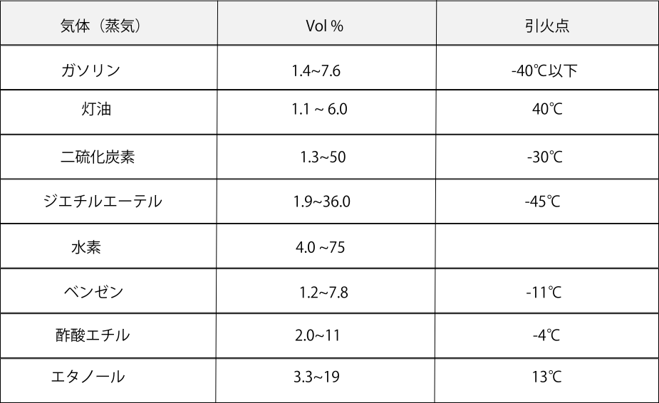
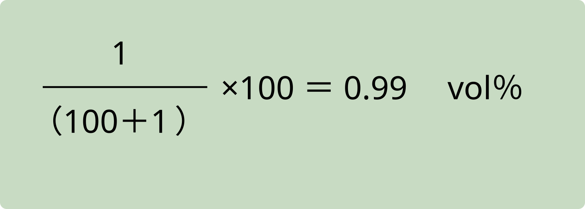
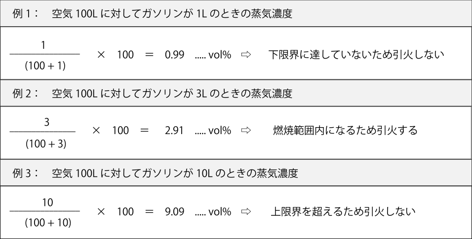
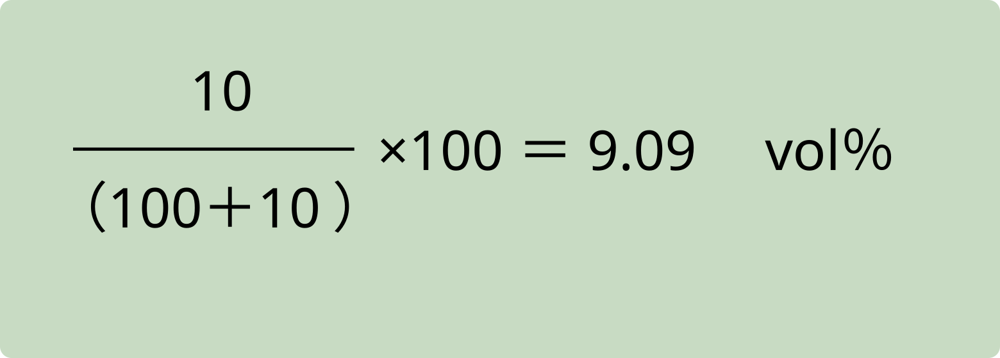

燃焼範囲とは
燃焼範囲とは、空気中で可燃性蒸気が着火し、燃焼を続けることができる 蒸気濃度の下限から上限までの範囲をいいます。 この範囲は、蒸気と空気の混合気体中に含まれる可燃性蒸気の体積％（vol％）で表します。 なお、「爆発」を対象とする場合には、ほぼ同じ考え方で爆発範囲と呼びます。
「vol％」は、混合気体中に含まれる可燃性蒸気の体積（容量）百分率を表します。 ここでの vol は、英語の volume（体積）の略です。
燃焼限界は、可燃性蒸気が燃焼を維持できる 最小濃度と最大濃度の境目をいいます。 蒸気濃度が高い側の限界を上限界（上限値）、 低い側の限界を下限界（下限値）と呼びます。 一般に、燃焼範囲が広く、特に下限界が低いほど、少量の蒸気で引火しやすく危険性が高くなります。
また、燃焼範囲の下限界に相当する蒸気濃度を生じさせる液温を 引火点といいます。
燃焼範囲（爆発範囲）と引火点の例
| 気体 | vol％ | 引火点 |
|---|---|---|
| ガソリン | 1.4〜7.6 | -40℃以下 |
| 灯油 | 1.1〜6.0 | 40℃ |
| 二硫化炭素 | 1.3〜50 | -30℃ |
| ジエチルエーテル | 1.9〜36.0 | -45℃ |
| 水素 | 4.0〜75 | |
| ベンゼン | 1.2〜7.8 | -11℃ |
| 酢酸エチル | 2.0〜11 | -4℃ |
| エタノール | 3.3〜19 | 13℃ |
出る出るポイント！
可燃性蒸気の燃焼範囲は物質ごとに異なり、 同じ物質でも試験条件（点火源の種類、容器の形状、温度、圧力など）によって 数値は変化します。
まずは、表の中でどの物質の範囲が広いか、 特に水素や二硫化炭素のように燃焼範囲が極端に広い物質ほど危険だ というイメージを押さえましょう。
一般に、温度や圧力が上昇するほど燃焼／爆発範囲は広がり、 特に濃度の上限界が大きくなります。 試験では「温度が下がると燃焼範囲は広がる」「圧力が低いほど燃焼範囲が広い」 といった文はひっかけになりやすいので要注意です。
混合気の蒸気濃度
たとえばガソリンの爆発範囲は1.4～7.6 vol％です。 したがってガソリンエンジンでは、混合気中のガソリン蒸気濃度が 1.4～7.6 vol％の範囲内にあるときに燃焼（爆発）が起こり、 それより薄い（下限未満）または濃い（上限超）の場合には燃焼（爆発）は起こりません。

ガソリン量に対する蒸気濃度
例：空気100 L中に含まれるガソリン量を変化させたときの 蒸気濃度の計算結果を示しています。
ガソリン量に対する蒸気濃度
ここでは、空気を100 Lと一定にしておき、 そこに加えるガソリンの量を1 L → 3 L → 10 Lと変化させたときの 混合気の蒸気濃度を計算します。
計算した蒸気濃度が、先ほどのガソリンの爆発範囲 1.4～7.6 vol％のどこに位置するかを確認し、 引火の可否を判断していきます。
空気100Lに対してガソリンが1Lのときの蒸気濃度

空気100Lに対してガソリンが3Lのときの蒸気濃度

空気100Lに対してガソリンが10Lのときの蒸気濃度

クイズ
次は第2章6節：自然発火に進みます。